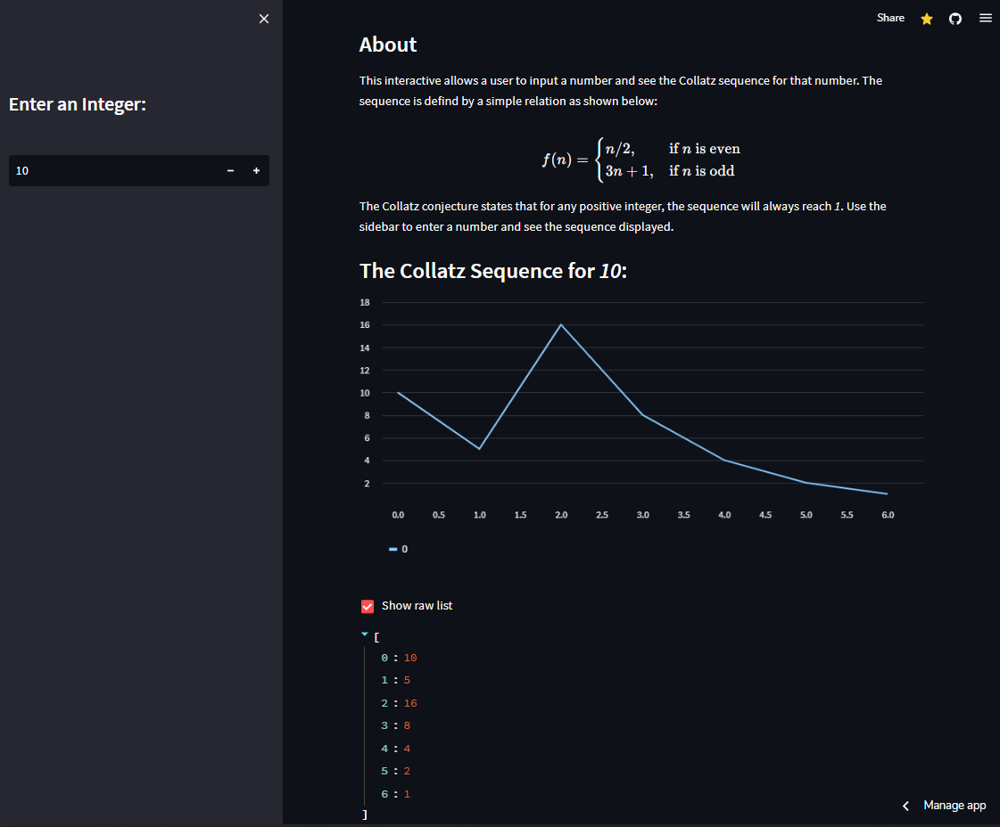
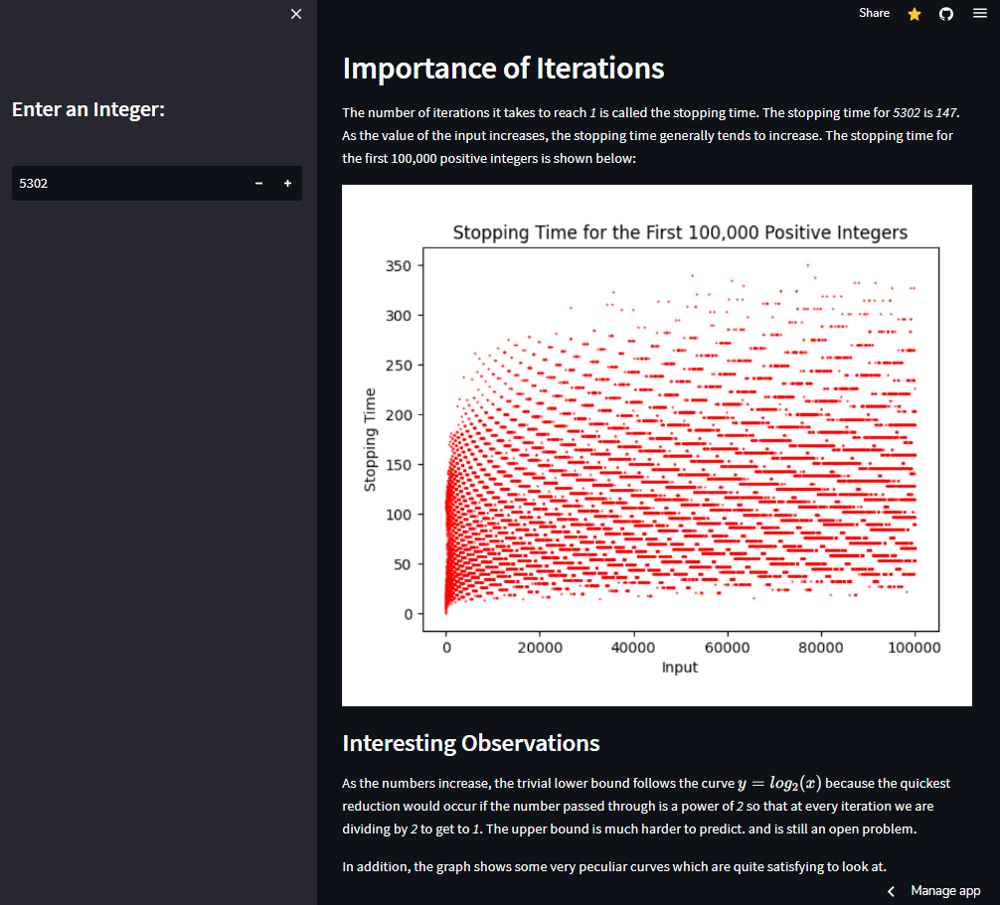

Maverick Reynolds
June 12, 2023
We're going to walk through exactly what Streamlit is, what the Collatz Conjecture is, and how we can combine them to create an interactive visualization that serves as a perfect Hello World style project for the data science (or just Python) enthusiast.
I figured this would be a great topic to write my first Medium article about as well as a good opportunity to build something cool for my CS repertoire.
Streamlit
Streamlit is a Python library that makes building web-apps and data dashboards as easy as can possibly be. All its functions are highly abstracted as we will see, and everything from hosting to front end layout is taken care of.
It includes many different types of widgets and layout abilities that allow the whole interface to automatically respond to user input by rerunning the entire script on change by simply clicking 'always rerun'. I have some minor experience working with front-end, but nothing can compete with the ease of creation that Streamlit offers.
The Collatz Conjecture
As I mentioned, visualizing the Collatz Conjecture is a great way to get started with using the platform. The conjecture is based off a simple recursive relation shown
The Recursive Formula
It states that all natural numbers passed through the function repeatedly will eventually evaluate to 1. As simple as it seems, it is actually an open problem in the mathematics community. We won't be solving it here (that's for another article), but we can see what it looks like
Getting Started
The best place to start would be with a simple implementation of the conjecture. I am using Python to write a function that takes a value and returns the 'path' the value takes to resolve to 1
@st.cache_data
def collatz(z):
steps = [z]
while z != 1:
if z % 2 == 0:
z //= 2
else:
z = 3*z + 1
steps.append(z)
return steps
Let's see what our function gives us:
> collatz(10)
[10, 5, 16, 8, 4, 2, 1]
The st.cache_data decorator simply means that Streamlit will cache the result of the function instead of rerunning it. This works since our function is deterministic (meaning completely determined by the parameters and no random variation). This isn't a big deal here, but with dataframes of thousands of rows it makes a difference.
Once we've got our basic function, we can connect it to Streamlit by simply importing the library and going from here. I used pip installer to work with the library but different environmental installation methods work fine as well.
pip install streamlitAfter importing, we can use Streamlit's built-in functions to create our web app. The title function is simple enough, and the subtitle, header, and write, functions do exactly as you would expect.
import streamlit as st
from PIL import Image
# Information about the app
st.title('Interactive Collatz')
st.write('Made by Maverick Reynolds')
At this point, all we need to do is open up the CLI in the current directory and run the Python file through Streamlit. The web app will open in a new window and we will be able to see our output
streamlit run Collatz.pyThe write function can be used to print text (or integers) to the app, but it is much more than that. It can take nearly any input and generate a different display based on what is passed through, the 'swiss-army knife' of commands as Streamlit describes it. If a Pandas dataframe is passed, it will render with html as a table. It also displays errors, classes, Matplotlib figures, Keras models, and more. It also renders Markdown as expected and uses the KaTeX library (which I have previous experience with)(another article idea maybe?) to render LaTeX as we will see.
st.subheader('About')
st.write("This interactive allows a user to input a number and see the
Collatz sequence for that number. The sequence is defind by a simple
relation as shown below:")
st.write("""
$$
f(n) =
\\begin{cases}
n/2, & \\text{if } n \\text{ is even} \\\\
3n + 1, & \\text{if } n \\text{ is odd}
\\end{cases}
$$
""")
st.write("The Collatz conjecture states that for any positive integer,
the sequence will always reach *1*. Use the sidebar to enter a number and
see the sequence displayed.")
The write function is only one of many high level functions provided by Streamlit. A good example of another is map(), which literally does provide an interactive map with points plotted given latitude and longitude if a dataframe is passed through.
Let's add a sidebar with a numeric input for the user. We will give it a minimum acceptable input of 1 and default it to 5302 and set the step to be 1 so integers only are inputted.
# Make a sidebar for input
st.sidebar.title('Enter an Integer:')
z = st.sidebar.number_input('', 1, value=5302, step=1)
To display a graph of the sequence, we can use Streamlit's line chart method with our data. This is also why our function was written to return a list and not simply the number of iterations required.
# Display the sequence
st.subheader('The Collatz Sequence for *' + str(z) + '*:')
coll_output = collatz(z)
# Display the graph
st.line_chart(coll_output)
# Raw List
if st.checkbox('Show raw list'):
st.write(coll_output)
We also used the checkbox function to both create the element in the web app and return its status, which if true will write the output to the app as well.
Now it's really starting to take shape. And we hardly even did anything!
At this point, we're pretty much done. In the app I added some extra information in addition to a figure of the stopping times of the first 100,000 integers
st.header('Importance of Iterations')
st.write('The number of iterations it takes to reach *1* is called the
stopping time. The stopping time for *' + str(z) +
'* is *' + str(len(coll_output) - 1) + '*. As the value of the input
increases, the stopping time generally tends to increase. The stopping
time for the first 100,000 positive integers is shown below:')
# Display the graph using matplotlib (use image)
stops_img = Image.open('stopping_times_100K.png')
st.image(stops_img, use_column_width=True)
st.subheader('Interesting Observations')
st.write('As the numbers increase, the trivial lower bound follows the
curve $y=log_2(x)$ because the quickest reduction would occur if the
number passed through is a power of *2* so that at every iteration we
are dividing by *2* to get to *1*. The upper bound is much harder to
predict and is still an open problem.')
st.write('In addition, the graph shows some very peculiar curves which are
quite satisfying to look at.')
The figure was made using Matplotlib separately using the code below and then loaded using Pillow as an image. Streamlit's image function takes the variable and displays it to the app.
import matplotlib.pyplot as plt
from Collatz import collatz
def collatz_stops(n):
return [len(collatz(i)) - 1 for i in range(1, n + 1)]
def graph_stops():
# Generate the graph
plt.plot(collatz_stops(100_000), ls='none', marker='.',
markersize=1, color='red')
plt.xlabel('Input')
plt.ylabel('Stopping Time')
plt.title('Stopping Times for the First 100,000 Positive Integers')
plt.savefig('stopping_times_100K.png')
plt.show()
And that's it. At this point, the user can enter any positive integer he/she wants into the box and the graph will automatically update. They can also see the Matplotlib figure as well as the original LaTeX above.
GitHub Integration
To share this with the world, we need to initialize a public GitHub repository and link to this particular file. In projects with many files and subdirectories, it would be better practice to name this app.py since this is where Streamlit derives the layout from.
In addition, we need to add a requirements.txt file because we used an external dependency (Pillow) to load the image. Let's specify a stable version, and save the file in the directory.
Pillow==9.3.0
After publishing to GitHub, we can make an account with Streamlit and navigate to the dashboard. Click on the 'New app' button and then 'from existing repo'. The link to the Python file for this project looks like the following:
https://github.com/mavreyn/collatz-streamlit/blob/main/Collatz.py
After the app loads (it takes a little longer the first time), we are live and good to go! I changed my app's url to a custom one which is a setting available from my dashboard as well. You can access it Here:
Thanks so much for reading! This was my first article and I hope you got something out of it in some way. I'm excited to continue using Streamlit and explore all of its integrations, widgets, and features as there is so much more to learn about this library.
Feel free to get in touch, and best of luck!
Full Code for Collatz.py
'''
So This is the perfect hello world program for data visualization / computer science
Taking this old thing and making it new again
Maverick Reynolds
06.10.2023
'''
import streamlit as st
from PIL import Image
@st.cache_data
def collatz(z):
steps = [z]
while z != 1:
if z % 2 == 0:
z //= 2
else:
z = 3*z + 1
steps.append(z)
return steps
def main():
# Information about the app
st.title('Interactive Collatz Visualizer')
st.write('Made by Maverick Reynolds')
st.subheader('About')
st.write('This interactive allows a user to input a number and see the Collatz sequence for that number. The sequence is defind by a simple relation as shown below:')
st.write('''
$$
f(n) =
\\begin{cases}
n/2, & \\text{if } n \\text{ is even} \\\\
3n + 1, & \\text{if } n \\text{ is odd}
\\end{cases}
$$
''')
st.write('The Collatz conjecture states that for any positive integer, the sequence will always reach *1*. Use the sidebar to enter a number and see the sequence displayed.')
# Make a sidebar for input
st.sidebar.title('Enter an Integer:')
z = st.sidebar.number_input('', 1, value=5302, step=1)
# Display the sequence
st.subheader('The Collatz Sequence for *' + str(z) + '*:')
coll_output = collatz(z)
# Display the graph
st.line_chart(coll_output)
# Raw List
if st.checkbox('Show raw list'):
st.write(coll_output)
st.header('Importance of Iterations')
st.write('The number of iterations it takes to reach *1* is called the stopping time. The stopping time for *' + str(z) + '* is *' + str(len(coll_output) - 1) + '*. As the value of the input increases, the stopping time generally tends to increase. The stopping time for the first 100,000 positive integers is shown below:')
# Display the graph using matplotlib (use image)
stops_img = Image.open('stopping_times_100K.png')
st.image(stops_img, use_column_width=True)
st.subheader('Interesting Observations')
st.write('As the numbers increase, the trivial lower bound follows the curve $y=log_2(x)$ because the quickest reduction would occur if the number passed through is a power of *2* so that at every iteration we are dividing by *2* to get to *1*. The upper bound is much harder to predict and is still an open problem.')
st.write('In addition, the graph shows some very peculiar curves which are quite satisfying to look at.')
st.header('Other Resources')
st.write('For more information on the Collatz conjecture, check out the following links:')
st.write('**Wikipedia** https://en.wikipedia.org/wiki/Collatz_conjecture')
st.write('**Numberphile** https://www.youtube.com/watch?v=5mFpVDpKX70')
st.write('**Quanta Magazine** https://www.quantamagazine.org/why-mathematicians-still-cant-solve-the-collatz-conjecture-20200922')
if __name__ == '__main__':
main()